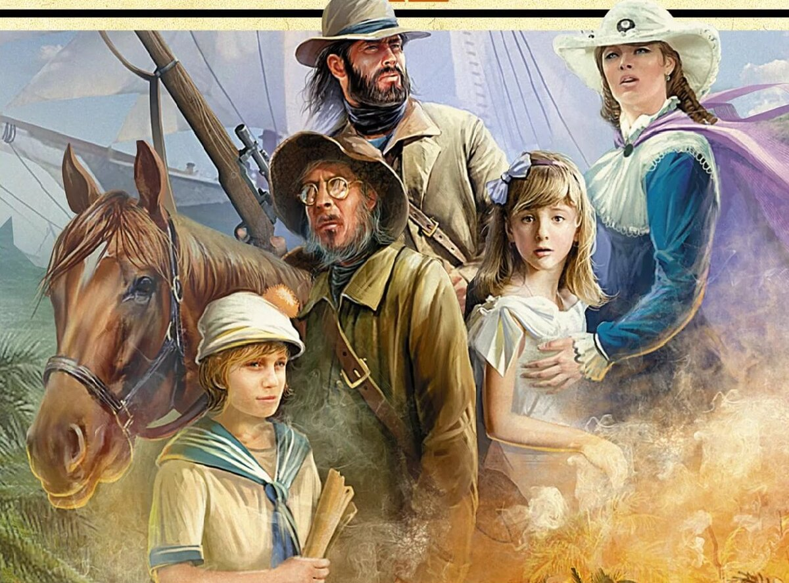

Дети капитана Гранта

Описание
«Дети капитана Гранта» — приключенческий роман французского писателя Жюля Верна. Роман состоит из трёх частей, в каждой из них главные герои повествования — лорд и леди Гленарван, майор Мак-Наббс, Жак Паганель, Мэри и Роберт Грант, Джон Манглс — в поисках потерпевшего кораблекрушение капитана Гранта путешествуют вокруг Земли по Южной Америке через Патагонию, по Австралии и Новой Зеландии, строго придерживаясь 37-й параллели южной широты